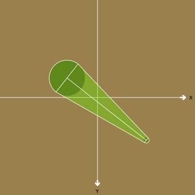

Posted by Giorgio O. on Dec 22, 2008
obviously the class drawConnection should just be a function... absent-minded copy-paste :-)
Posted by Giorgio O. on Dec 22, 2008
so here you get the clean version
from math import pi, degrees, atan2 half_pi = pi/2.0 size(500, 500) def angle(x1, y1, x2, y2): """ Calculates the angle between p1 and p2""" return atan2(y2-y1, x2-x1) def arc(self, originx, originy, radius, startangle, endangle, clockwise=True): """ Draw an arc, the clockwise direction is relative to the orientation of the axis, so it looks flipped compared to the normal Cartesial Plane """ self._segment_cache = None self.inheritFromContext() if clockwise: self._nsBezierPath.appendBezierPathWithArcWithCenter_radius_startAngle_endAngle_clockwise_( (originx, originy), radius, startangle, endangle, 1) else: self._nsBezierPath.appendBezierPathWithArcWithCenter_radius_startAngle_endAngle_( (originx, originy), radius, startangle, endangle) def drawConnection(x1, y1, r1, x2, y2, r2): a = angle(x1, y1, x2, y2) ap = a+half_pi am = a-half_pi c = BezierPath() arc( c, x1, y1, r1, degrees(ap), degrees(am), 0 ) arc( c, x2, y2, r2, degrees(am), degrees(ap), 0 ) c.closepath() c.draw() fill(0) drawConnection(100, 100, 10, 300, 300, 60)

Conical connector snippet
Posted by Giorgio O. on Dec 21, 2008
Hello,
just a quick post to share this snippet. the code is not really polished but it works pretty decently.
given 2 circles, it draws a 'conical' connector between them.
it also uses the NSBezierPAth arc function.
I had to develop this while trying to skin some graph networks.